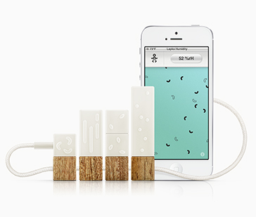
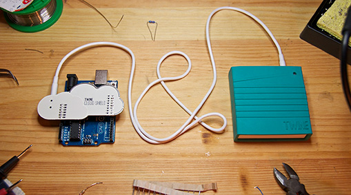
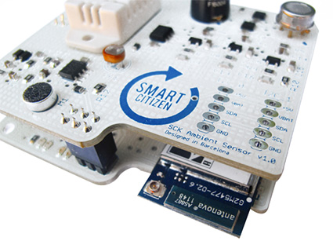
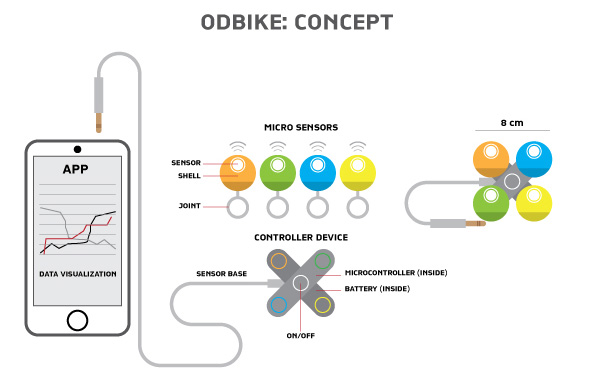
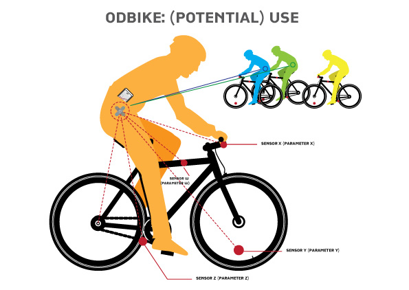

Exercise 01 - Principles and practice - Project Management
My Project
THE BASIC IDEA.My project aims to explore a big and complex topic in a very pragmatic way.
I am really fascinated by the worlds of microcontrollers and micro sensors able to detect and measure various personal and environmental parameters, returning (visual) data through digital applications. In few words, I am very interested in the smart things, but at the moment I am not able to create them.
In particular, I am fascinated by the idea to self-fabricate micro-smart objects trying to use all the smallest technologies and tools that we can find in a Fab Lab. I like the idea to create a microfactory. So, through my project I would like to experiment a DIY micro-fabrication process able to produce a DIY micro-system.
For this reason, I'd like to build a portable kit containing micro-sensors which can be used by the people in order to detect and measure (in a friendly way) various parameters of a man, an object or a machine while is moving or living in an environment. I know very well that many works and projects have been recently developed, and many of them are now on crowdfunding platforms. For instance, I’m thinking about two interesting cases that are Lapka ( https://mylapka.com/pem/), Twine ( http://supermechanical.com/twine/), Smart Citizen Kit ( http://wwww.kickstarter.com/) and the Copenaghen Wheel Project.( http://senseable.mit.edu/copenhagenwheel/).




The concept
To create a project based on the portable kit of micro-sensors, I need a well focused field of application.
For this reason I choice to create a portable kit for bikes working on the on-board electronic concept. Why the bike? Because bicycles are becoming personal/personalized objects and because in many cities, network of urban mobility services are based on bikes (e.g. bike sharing).
The my project (should) works
A bicycle can be transformed in a smart thing in many ways: sensors can help the cyclist to move better in traffic, can make cyclists safer, can gather data on environment supporting many cyclists. Finally sensors can help a bike and a cyclist to communicate with other bikes and cyclists. The project, which I temporary named ODBike, Open Data Bike. It is a Portable Kit allowing people to install environmental sensors on bikes. Sensors can detect and collect data related to different environmental aspects. Data detected by sensors can be collected by a (micro)controller (See Fig.1 and 2). Finally, a simple APP can support the people to visualize data, using a smart device (phone, tablet, …)

How to make ODBike
I would like to realize my project using most of the technologies and techniques provided by Fab Academy. O.D.Bike could/should composed by:Energy can be provided by a bicycle dynamo.
Finally, to develop and implement the project will be important: